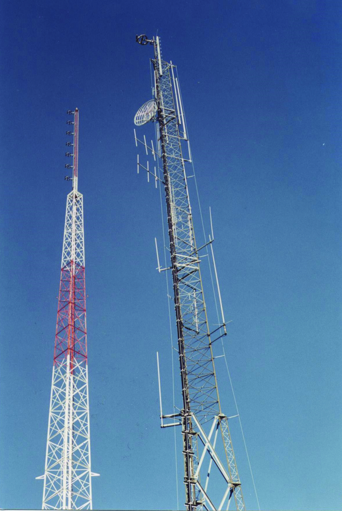

Part 73 basically provides provisions for your local radio stations or national/international stations.
These stations can transmit on FM or AM
AM radio stations typically operate in the frequency range of 535 kHz to 1705 kHz (kilohertz), divided into numerous channels spaced 10 kHz apart. These frequencies are often referred to by their assigned channel numbers (e.g., 600 AM).
FM radio stations operate in the frequency range of 88.1 MHz to 107.9 MHz (megahertz) in the United States. Like AM stations, FM stations are also assigned specific frequencies within this range, spaced 0.2 MHz (or 200 kHz) apart. For example, a station might broadcast at 93.5 FM.
These stations are also permited to transmit emergency broadcasting messages for local or nation emergencies. This is known as the Emergency Alert System (EAS).
